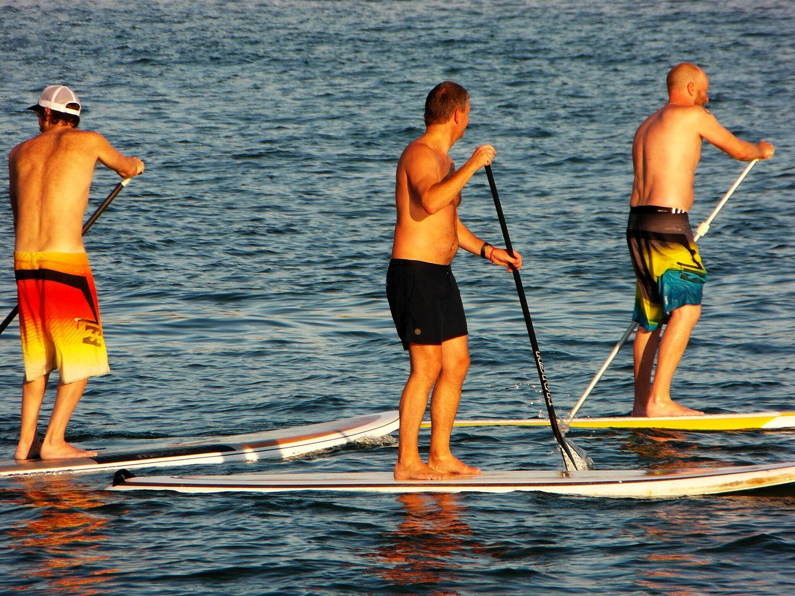

In breve
Per il paddle contano le raffiche. In Il mio lago il paddle è «Perfetto» fino a 12 km/h di raffiche, «Bene» fino a 20 km/h, «Così così» fino a 28 km/h e sconsigliato oltre; la pioggia o un’aria sotto gli 8 °C fanno perdere un livello. Con la bise è meglio restare vicino a riva o aspettare.
Quale vento massimo per fare paddle?
In piedi su una tavola si offre molta presa al vento, e le onde destabilizzano in fretta. Questi sono i riferimenti dell’app (non norme ufficiali):
- Perfetto: raffiche fino a 12 km/h, il lago è uno specchio.
- Bene: fino a 20 km/h, qualche increspatura.
- Così così: fino a 28 km/h, scuote.
- No: oltre, o in caso di temporale.
La pioggia o un’aria sotto gli 8 °C fanno perdere un livello. Il vento del giorno, spiaggia per spiaggia, è nell’app; la bise merita un’attenzione particolare.
Dove noleggiare un paddle sul Lemano?
- Tropical Corner, Cologny (da aprile a ottobre), vicino a Tropical Corner: Scuola di windsurf dal 1981: noleggio di tavole e paddle, pontile per wakeboard.
- SUP Club Nyon, Nyon, vicino a Nyon: Club di paddle in riva al lago, Rue de Rive.
- Pedalino, Losanna (da maggio a settembre), vicino a Lausanne – Vidy: Centro nautico estivo all’estremità orientale della grande spiaggia di Vidy: paddle, pedalò, motoscafi.
- Lutry’s Paddle School, Lutry, vicino a Lutry: Paddle e kayak da noleggiare in estate sulla spiaggia di Curtinaux, nel cuore del paese.
- SwissPaddle, Corseaux, vicino a Corseaux: Paddle e wing foil a Corseaux, accanto alla Nestlé di Vevey.
- Nautic Loisirs, Montreux, vicino a Montreux – Clarens: Quai des Fleurs: paddle, kayak, tavole da windsurf e motoscafi.
- Evolution 2 Saint-Gingolph, Saint-Gingolph (da giugno a settembre), vicino a Saint-Gingolph: Base nautica sulla spiaggia comunale: paddle singolo o in tandem, kayak, e-surf, da giugno a settembre secondo il meteo.
- Centre nautique d’Évian, Evian (da luglio a agosto), vicino a Évian: Base comunale in Avenue du Général-Dupas: barche a remi, pedalò e paddle, a luglio e agosto nel pomeriggio.
- Evolution 2 Thonon, Thonon, vicino a Thonon: Base nautica sul Quai de Ripaille vicino alla spiaggia della Pinède: paddle, paddle gigante, kayak, pedalò.
Prezzi, orari e disponibilità cambiano: da verificare presso il noleggio prima di andare.
Quale spiaggia scegliere per cominciare?
Una spiaggia con un accesso facile e un punto riparato dal vento del giorno: la freccia del vento di ogni pagina di spiaggia aiuta a scegliere la riva meno esposta.
L’acqua del lago in questo momento
La temperatura dell’acqua di ogni spiaggia è nell’app Il mio lago, aggiornata ogni tre ore.